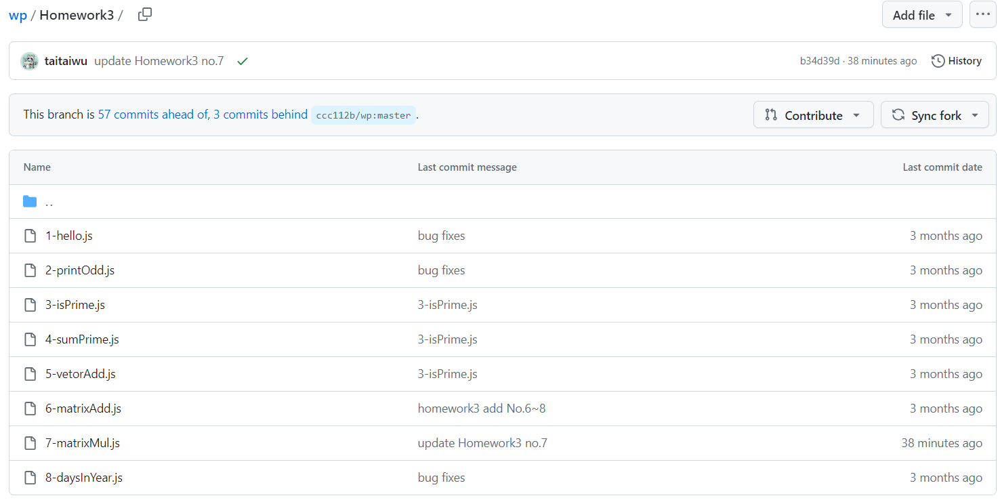
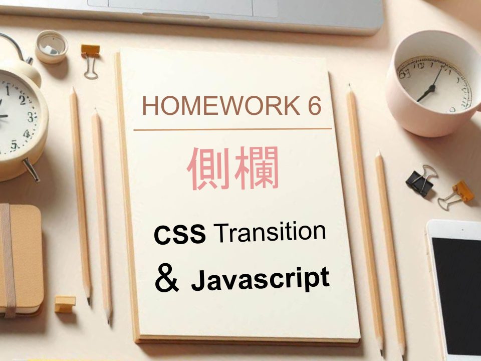
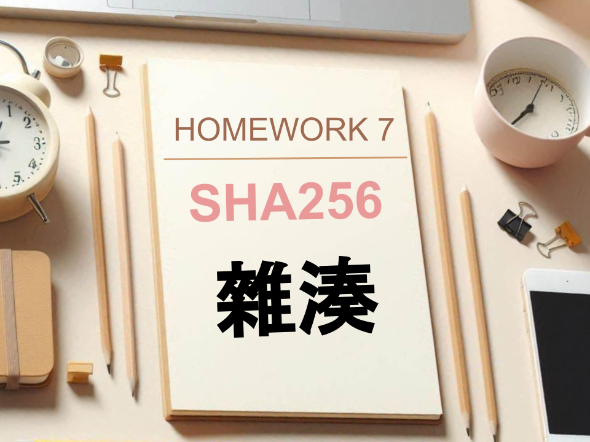

網頁設計 平時作業
資工一 111210520 吳佳泰


作業三 - Javascript練習一
- 先印出 -- Hello 你好！
- 印出小於 n 的所有奇數 printOdd(n)
- 寫一個函數判斷 n 是否為質數 isPrime(n)
- 印出所有小於 n 的質數總和 sumPrime(n)
- 寫一個函數做向量相加 vectorAdd(a,b)
- 寫一個函數做矩陣相加 matrixAdd(a,b)
- 寫一個函數做矩陣相乘 matrixMul(a,b)
-
寫一個函數 daysInYear(n) 傳回西元 n 年應該有幾天
- 例如 daysInYear(1991) => 365
- daysInYear(2004) => 366
- daysInYear(1900) => 365
- daysInYear(2000) => 366 # 對 400 取餘數為 0
作業四 - Javascript練習二
- 請寫一個 min(a,b) 函數傳回 a, b 裡較小的那個數字
- 請寫一個 arrayMin(a) 函數傳回陣列 a 裡最小的那個數字
-
請寫一個 filter(a, f) 函數可以根據 f 成功或失敗過濾掉那些不合的內容
- 例如 filter([1,2,3,4], function (x) { return x%2 == 1; }) 會傳回 [1,3]
- 請寫一個函數 weekday(str) 可以把星期幾的英文轉換成數字（0,1,2,3,4,5,6) (Sunday 是 0))
-
請寫一個函數 countChar(str) 可以算出一個字串中，每個字出現幾次。
- 例如： “aabccadeaac" => { a: 5, b:1, c:3, d:1, e:1}
- 寫一個函數 gcd(a,b) 傳回 a, b 兩數字的最大公因數。
- 寫一個函數 lcm(a,b) 傳回 a, b 兩數字的最小公倍數。
- 請寫一個函數 gradient(f, p) 可以計算 f 在 p 點的梯度

作業六 - 側欄 (CSS Transition 與 JavaScript)
請使用下列兩種方式做出可展開縮放的側欄，側欄拉開後，內容可放入你的個人網頁的各種頁面連結
- 使用 CSS Transition (滑鼠移入就展開，移出就縮小）
- 使用 JavaScript (滑鼠點按就切換，展開或縮小）


作業十 - 請用 groq 大語言模型 LLM 做一個簡單的網頁應用
應用建議
- 翻譯器 : 中翻英 / 中翻日 / 英翻中 / 日翻中
- AI祕書 : 會幫你記錄待辦事項，當天提示你該日行程
- AI男友/女友 : 角色扮演
- RAG (Retrieval Augmented Generation)
- AI程序員
- 結合其他API